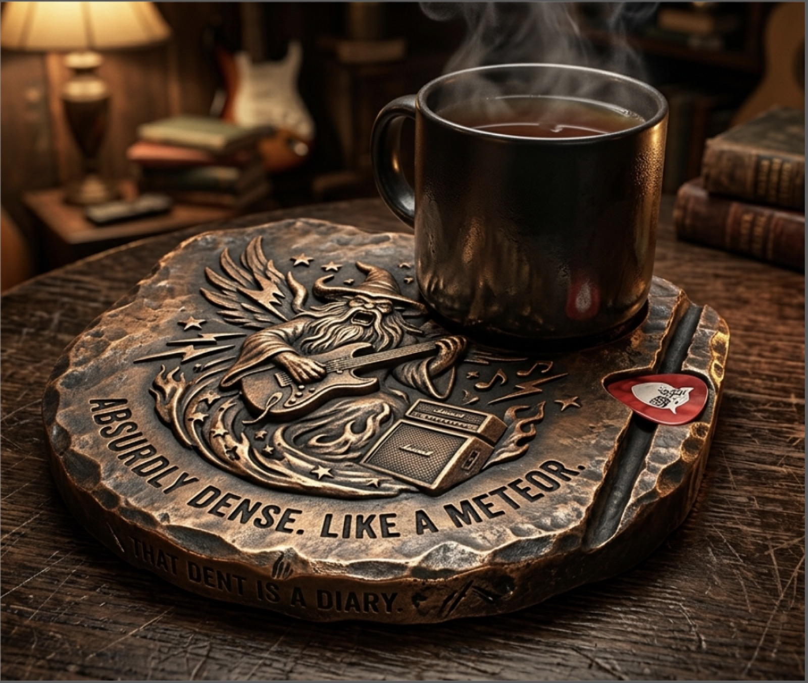

04 M — Project Portfolio

For this activity we designed a custom drink coaster for a specific client, using generative AI throughout the process: to brainstorm interview questions, to simulate the interview itself, and to visualize the final design. I worked with my partner Faisal in Class Group #13.
We started by developing a set of interview questions. The goal was to learn enough about a person to design something that felt specific to them, so we thought about both the common-knowledge facts you can ask anyone and the more obscure details that are harder to surface and harder to verify. We then primed Claude Opus 5 to take on our client's personality, described how we wanted it to answer, and conducted the interview in character. At the end we asked for a summary of the conversation and used that to pull out our design criteria.
The finished coaster has a heavy, forged look: a worn bronze surface with a rough, chipped edge, as though it had been cast and then knocked around for years. The face is engraved with a long-bearded wizard playing an electric guitar next to an amplifier, framed by lightning bolts and stars, and a guitar pick sits in a channel along one edge. Two lines are worked into the engraving: "ABSURDLY DENSE. LIKE A METEOR." around the outer rim, and "THAT DENT IS A DIARY." below it.
What surprised me most was how much the emotional side of the client shaped the design. I had assumed the most useful material would come from concrete facts, but I realized that the emotional aspect of human thought was a much larger part of the design process, at least in this instance, than I originally thought. How we feel is very important.
Tools used: Claude Opus 5 for the client interview, chosen because its reasoning and objectivity are good, and Gemini 3.1 Pro to generate the image of the coaster.